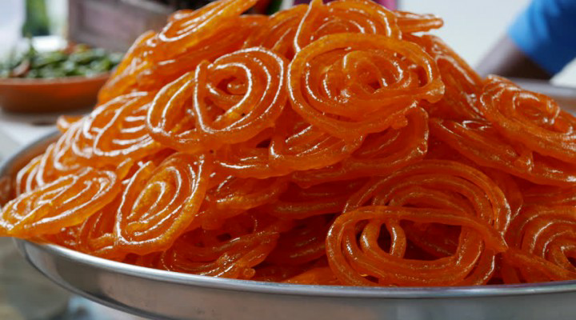

Cara Buat (Jalebi)

Langkah membuat Jalebi:
- Campurkan tepung terigu (maida) dan tepung buncis (besan), baking powder dan baking soda.
- Tambahkan yogurt, bedam kapulaga dan campurkan
- Tambahkan pewarna makanan (jika perlu) dan air untuk membentuk adonan
- Adonan sebaiknya tidak terlalu tebal atau tipis
- Tutup adonan dan tunggu selama 10-12 jam untuk difermentasiat gelembung kecil di atas
- Di pagi hari, kocok adonan sedikit. Tambahkan sedikit air jika adonan terlalu tebal
- Sementara itu, tambahkan gula ke wajan. Tambahkan air dan aduk dengan gula dan biarkan semuanya mendidih.
- Setelah mendidih, tambahkan bubuk kapulaga dan jus lemon.
- Biarkan mendidih sampai sirup menjadi lengket
- Jaga agar tetap lengket dan sirup hangat saat membuat jalebi.
- Pindahkan adonan jalebi ke dalam botol peras.
- Sementara itu, panaskan minyak dalam panci atau kadai.
- Aduk adonan dalam minyak panas, buat bentuk spiral dari dalam ke luar. Ingatlah agar tetap menjaga panas rendah,.
- Goreng sampai renyah dari kedua sisi. Angkat dari minyak dan segera celupkan ke dalam sirup gula hangat selama beberapa detik
- Pindahkan jalebis dari sirup gula dan pindahkan ke piring saji.
- Jalebi siap disajikan.